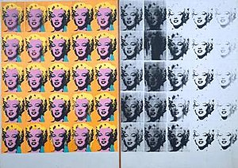
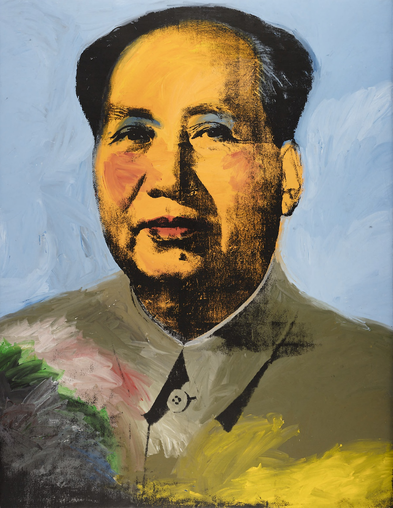

The Best Pieces by Andy Warhol
|
Campbell's Soup Cans holds one of each of the 32 soup varieties offered by the company. It's production bought pop art to forefront of the art world in the United States by offsetting the current dominating form Abstract Impressionism. |
|---|---|
|
Though not Warhol's most famous portrayal of Marilyn Monroe, his portraits of her are iconic nonetheless. They are a part of a portfolio of portraits dedicated to the actress. They are painted with vibrant colors to give remeberance to her lively personality. |
Marilyn Diptych (1962) |
Dedicated to Marilyn Monroe after her death, this silkscreen painting contains fifty images of the namesake actress from the film Niagra. Debatably Warhol's most famous work, the left 25 show Marilyn in her all her beauty, while the right 25 show her in black and white, and fading. It is an iconic symbol of Pop Art. |
|
Warhol's most expensive piece, which sold for 100 million, the 12 foot painting depicts eigth overlapping elvises in cowboy attire. Due to being bought by a private buyer, it hasn't been seen since the 1960's and its wareabouts are currently unknown. |
Chairman Mao- |
My personal favorite, the depiction of Chairman Moa Zedong of the People's Republic of China. The 15 foot tall portrait exhibits Warhol at his most painterly. His use of femine additions to the cold blooded dictator can be seen as an opposition against Communism |
 Campbell's Soup Cans (1962)
Campbell's Soup Cans (1962) Marilyn Monroe-
Marilyn Monroe- Eight Elvises (1963)
Eight Elvises (1963)These are just some of the pieces by Andy Warhol, more of which can be discovered at theartstory.org/andywarhol